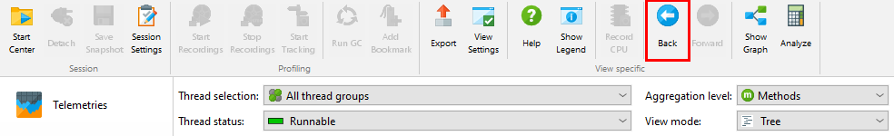

Call trees often contain too much information. When you want to reduce the displayed detail, there are several possibilities: you can restrict the displayed data to one particular sub-tree, remove all unwanted data, or use a more coarse-grained filter for displaying method calls. All of these strategies are supported by JProfiler.
If you profile a use case that consists of multiple tasks that run sequentially, each sub-tree can be analyzed separately. Once you have found the entry point to such a sub-task, the surrounding call tree is only a distraction and the timing percentages in the sub-tree inconveniently refer to the root of the entire call tree.
To focus on a particular sub-tree, JProfiler offers the Set As Root context action in the call tree and the allocation call tree views.
After setting a call tree root, information about the selected root is shown at the top of the view. A single scrollable label shows the last few stack elements leading up to the root and a detail dialog with the entire stack of the call tree root can be displayed by clicking on the Show More button.
When you use the set root action recursively, the call stack prefixes will simply be concatenated. To go back to the previous call tree, you can either use the Back button of the call tree history to undo one root change at a time, or the Reset Root And Show All action in the context menu to go back to the original tree in a single step.

What is most important about changing the call tree root, is that the hot spots view will show data that is calculated for the selected root only, and not for the entire tree. At the top of the hot spots view, you will see the current call tree root just like in the call tree view to remind of you the context of the displayed data.
Sometimes it's helpful to see how the call tree would look like if a certain method was not present. For example, this can be the case when you have to fix several performance problems in one go, because you are working with a snapshot from a production system that cannot be iterated quickly like in your development environment. After solving the main performance problem, you then want to analyze the second one, but that can only be seen clearly if the first one is eliminated from the tree.
Nodes in the call tree can be removed together with their sub-trees by selecting them and hitting the
Delete key or by choosing Remove Selected Sub-Tree from the context menu. Times in
ancestor nodes will be corrected accordingly as if the hidden nodes did not exist.
There are two removal modes. With the All invocations mode, JProfiler searches for all invocations of the selected method in the entire call tree and removes them together with their entire sub-trees. The Sub-tree only option only removes the selected sub-tree.
Just like for the Set As Root action, removed nodes influence the hot spots view. In this way, you can check what the hot spots would look like if those methods were optimized to the point of not being important contributions.
When you remove a node, the header area of both the call tree and the hot spots views will show a line with the count of the removed nodes and a Restore Remove Sub-Trees button. Clicking on that button will bring up a dialog where you can select removed elements that should be be shown again.
The third feature in the call that has an influence on the displayed data in the hot spots view is the view filter. When you change your call tree filters, it has a large effect on the calculated hot spots. To emphasize this interdependence with the call tree view, the hot spots view shows the call tree view filter in a line above the view together with a button to remove the additional filters.
Setting a call tree root, removing parts of the call tree and view filters can be used together, with the limitation that view filters have to be set last. As soon as view filters are configured in the call tree, the Set As Root and >Remove Selected Sub-Tree actions do not work anymore.
Invoking the Show Graph action in either the call tree or the hot spots view will show a graph that is limited to the same call tree root, does not include the removed methods and uses the configured call tree view filters. At the top of the graph, the information about these changes is displayed in a similar form as in the call tree.
When creating a new graph in the graph view itself, check boxes in the wizard let you choose which of these call tree adjustment features should be taken into account for the calculation of the call graph. Each check box is only visible if the corresponding feature is currently used in the call tree view.